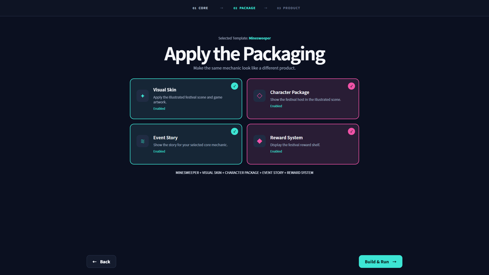

第 4 版 · 活动场景验收
minesweeper-event-ui-v4 · 本地未提交修改 · 2026-09-13
48 / 48 组合、6 个窄屏场景与旧配置迁移通过。额外 41 项游戏功能／素材保护检查通过。参考整图不进入运行画面，49 张原始素材未改变。
四个独立开关，无子选项和 Monetization Layer；允许全部关闭。
已确认的素材边界
迷宫按原始碰撞网格绘制，不复制参考图的示例路径。扫雷保留 9 × 9 正方棋盘。Tetris 的图层 4 是全透明窄图，未用于运行。手机竖屏使用整个场景的横向滚动。